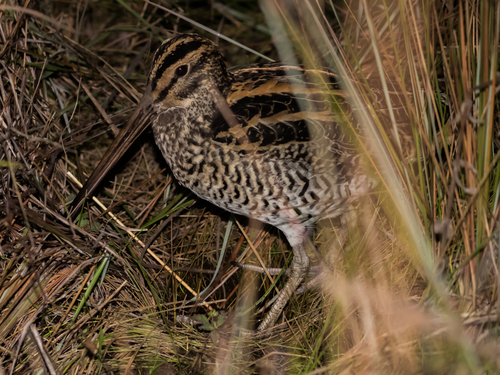
Giant Snipe
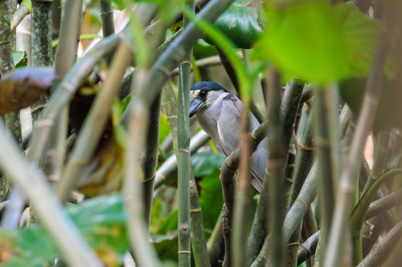
Boat-billed Heron
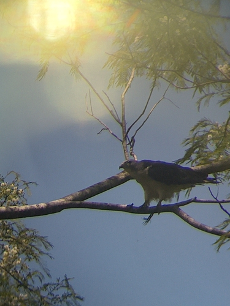
Grey-headed Kite
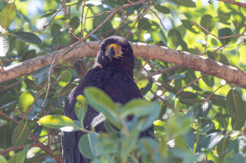
Great Black Hawk
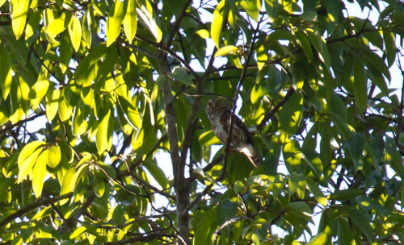
East Brazilian Pygmy Owl
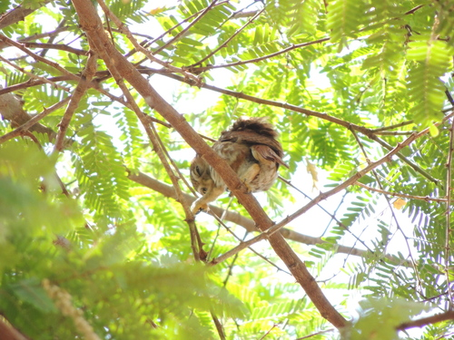
Ferruginous Pygmy Owl
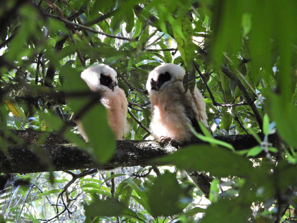
Tawny-browed Owl
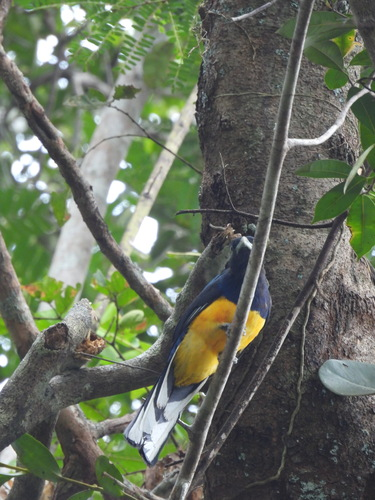
Green-backed Trogon
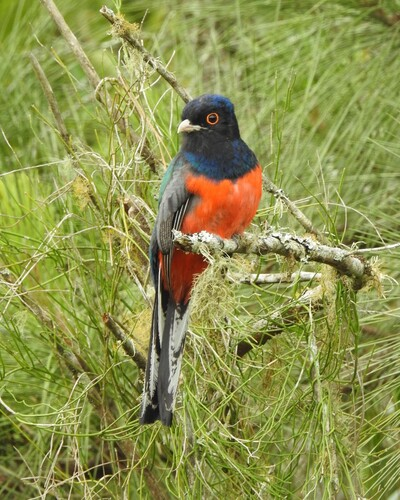
Surucua Trogon

Black-throated Trogon
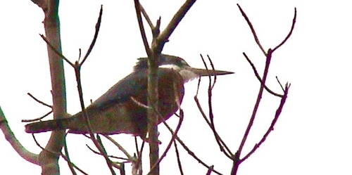
Ringed Kingfisher
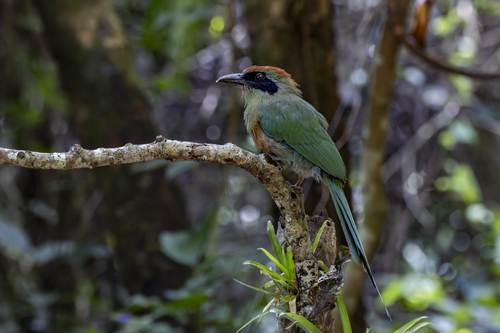
Rufous-capped Motmot
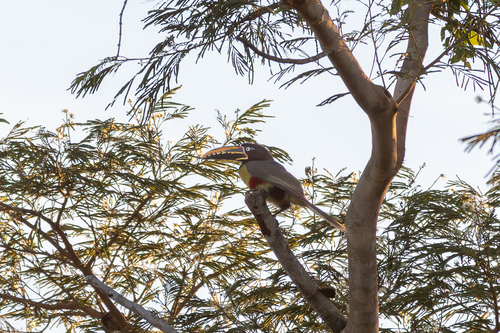
Chestnut-eared Aracari
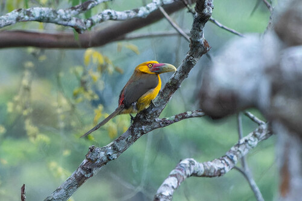
Saffron Toucanet
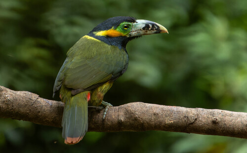
Spot-billed Toucanet
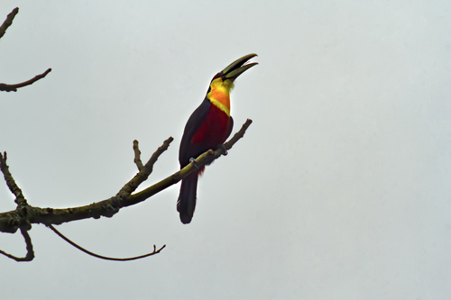
Green-billed Toucan
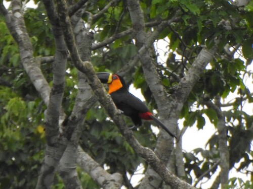
Channel-billed Toucan
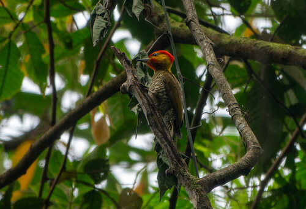
Yellow-throated Woodpecker
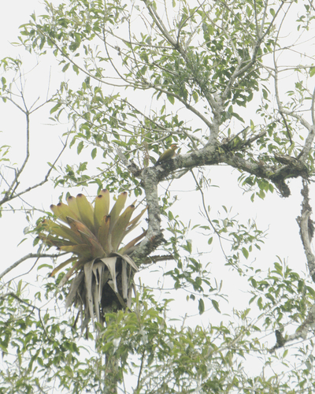
Yellow-browed Woodpecker
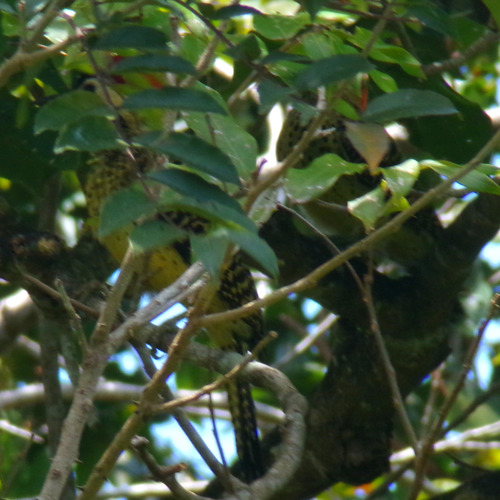
Green-barred Woodpecker
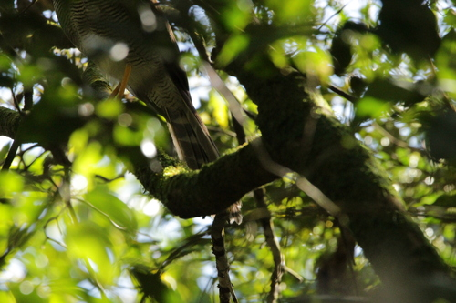
Barred Forest Falcon
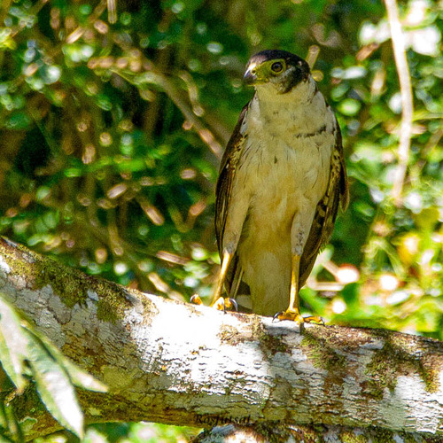
Collared Forest Falcon
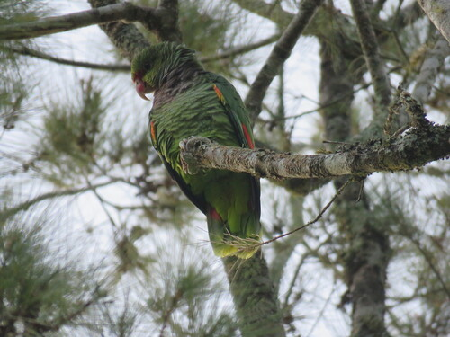
Vinaceous-breasted Amazon